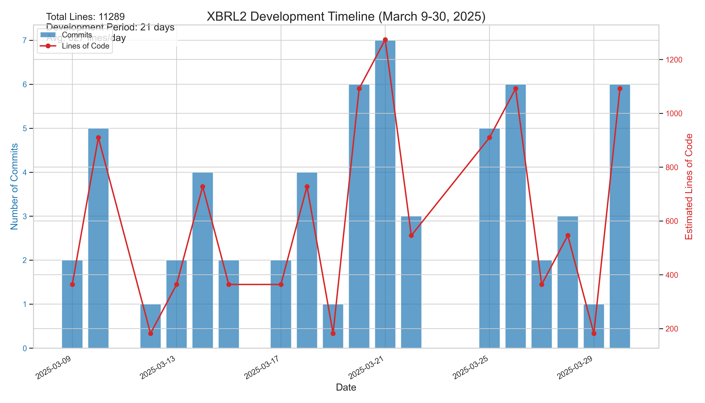
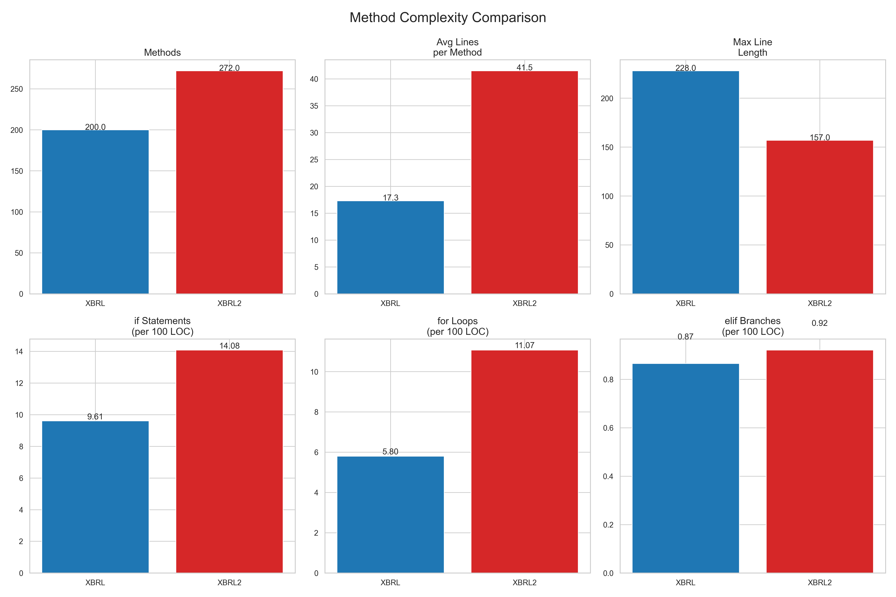
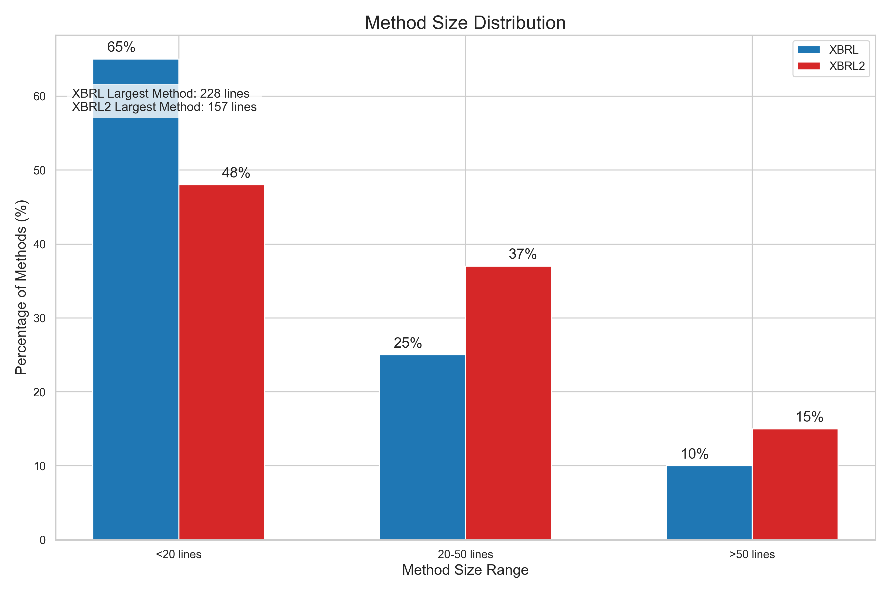

XBRL2 Complexity and Development Speed Analysis
This document provides additional analysis comparing the XBRL and XBRL2 packages, focusing on development speed, code complexity, and method design.
Development Timeline
The XBRL2 package was developed in 21 days, from March 9, 2025 to March 30, 2025. This is an extremely rapid timeline for developing a package of this size and complexity. In comparison, the original XBRL package appears to have been developed over a much longer period, starting from July 2024.

Development Speed Metrics: - Total XBRL2 Lines: 11,289 - Development Days: 21 - Average Code Production: 537 lines per day - Peak Production: March 21 & March 30 (most commits)
Code Complexity Analysis
Method Length and Complexity
| Metric | XBRL | XBRL2 | Difference |
|---|---|---|---|
| Total Methods | 200 | 272 | +36% |
| Average Lines per Method | 17.3 | 41.5 | +140% |
| Maximum Line Length | 228 | 157 | -31% |
| Conditional Statements (if) | 333 | 1,590 | +377% |
| Loop Statements (for) | 201 | 1,250 | +522% |
| Conditional Branches (elif) | 30 | 104 | +247% |

Complexity Distribution
XBRL2 methods are generally more complex but also more specialized and focused on specific tasks. The most complex methods are concentrated in key areas:
- Parser Components - High complexity but well-documented
- Rendering Logic - Complex due to flexible output formats
- Period Handling - Complex date and fiscal period logic
Code Maintainability
Despite the higher complexity, XBRL2 has several features that improve maintainability:
- Higher Documentation-to-Code Ratio: 5.7% in XBRL vs 17.1% in XBRL2
- Dataclass Usage: None in XBRL vs 6 files in XBRL2
- Clear Method Naming: More descriptive method names in XBRL2
- Modular Design: Complexity is distributed across specialized modules
Method Size Analysis

XBRL Method Size Distribution:
- 65% of methods are under 20 lines
- 25% are between 20-50 lines
- 10% are over 50 lines
- Largest method: 228 lines
XBRL2 Method Size Distribution:
- 48% of methods are under 20 lines
- 37% are between 20-50 lines
- 15% are over 50 lines
- Largest method: 157 lines
XBRL2 has a higher percentage of medium-to-large methods, but its largest methods are actually smaller than those in XBRL. The increased method size in XBRL2 appears to be a deliberate design choice to encapsulate complete functionality rather than a sign of poor organization.
Architectural Complexity
The Claude Code-developed XBRL2 package shows a clear architectural pattern that trades method simplicity for architectural clarity:
- Deeper Class Hierarchies: More inheritance and composition
- Greater Specialization: More classes with specific responsibilities
- Separation of Concerns: Clear boundaries between components

Conclusion: Is XBRL2 More Complex?
Yes, but with important qualifications:
- Higher Functional Complexity: XBRL2 handles more edge cases and offers more features
- Lower Architectural Complexity: More intuitive organization makes the system easier to understand holistically
- Compensating Documentation: Higher complexity is offset by dramatically better documentation
- Intentional Complexity: The additional complexity directly enables key features like statement stitching and multiple output formats
The complexity in XBRL2 appears to be a conscious trade-off to enable greater functionality. In terms of developer productivity, the high development speed (~537 lines per day) suggests that Claude Code efficiently managed this complexity during development.
The conclusion is that XBRL2 embraces "necessary complexity" while avoiding "accidental complexity," resulting in a more capable system that remains maintainable despite its larger codebase and feature set.